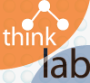

ARIES (ARtificial Intelligence for Ecosystem Services) is a next generation web application meant to make environmental decisions easier and more effective. ARIES helps discover, understand, and quantify environmental assets and what factors influence their value, in a geographical area of your choice and according to your needs. The result of an ARIES user session is an environmental asset portfolio that describes in depth the spatial distribution of the natural assets in your area, their potential and realized economic values, and the causal relationships that link the values to each other and to actual or potential policies. All the decisions taken during an ARIES session are yours, and the portfolio includes documentation and references to justify each and every operation, dataset, or model used to create it. Read More...
ThinkLab is the core middleware architecture for most projects at integratedmodelling.org. By employing ontology classes to connect data sources to API objects and literals, it realizes an effective integration of an object-oriented framework, an intelligent database system, and an ontology-based knowledge management environment. Thinklab enables formal reasoning on the contents of databases, algorithms, and user sessions, supporting data and model integration, dynamic modelling, distributed intelligent database and collaborative knowledge development. Read More...
Copyright (C) 2011 The ARIES Consortium. All rights reserved.